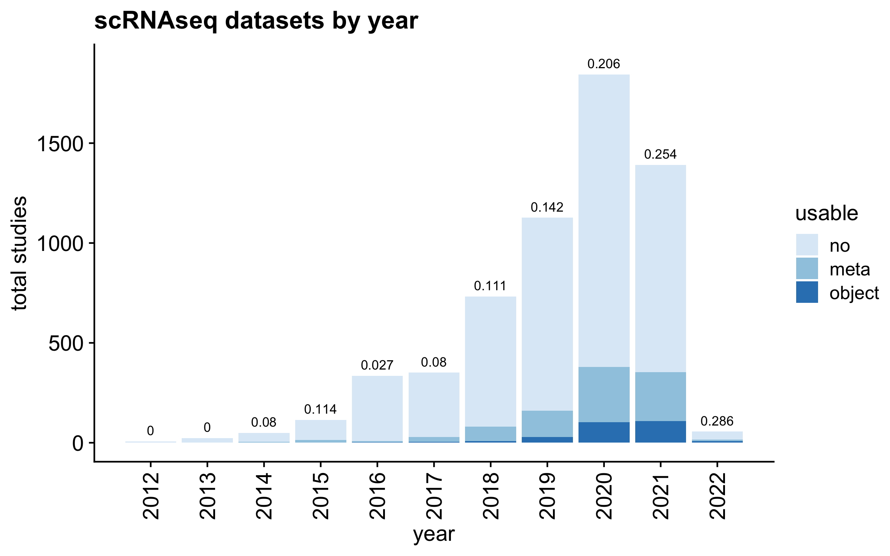

Cell-type annotations are frequently excluded from public single cell datasets. This hinders single cell sequencing analysis reproducibility and accessibility. To better describe the issue, we monitor GEO entries monthly (currently set to auto-update at 1AM UTC, 1st of the month), and programmatically determine the fraction of entries with (potentially, likely overestimated) usable cell metadata. Descriptions of the issue and suggestions (in short: PLEASE PLEASE deposit some metadata at cell level for scRNA-seq data) are now published on PLoS Biology. Supplemental data files related to the manuscript are located in the inst/manuscript/ directory.
Additional thoughtful guidelines for organizing scRNA-seq sample and cell metadata are discussed here by Füllgrabe et al.
The latest archive of GEO scRNA-seq records with other associated data can be directly downloaded here current_geo.rds. GEO filtering, preview first lines of text files, and content of .tar, and spot check feedback can be accessed from last tab on the clustifyr web app.
As of the initial presentation of this issue (10–17–2020), the number is a frustratingly low 0.122.
Current fraction in GEO with metadata: 0.1694831. In comparison, for ArrayExpress 10x datasets, the fraction is 0.1487179).
Number of depositions with updated metadata records since description of the issue here: 0.
Please also see full report page.
